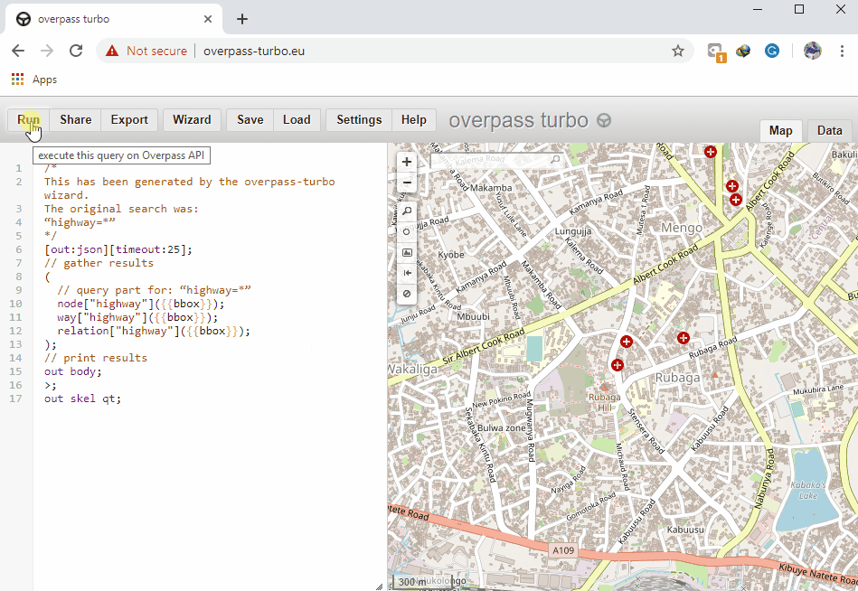
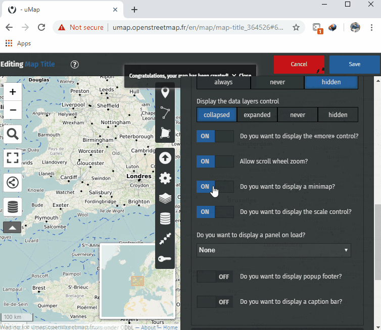
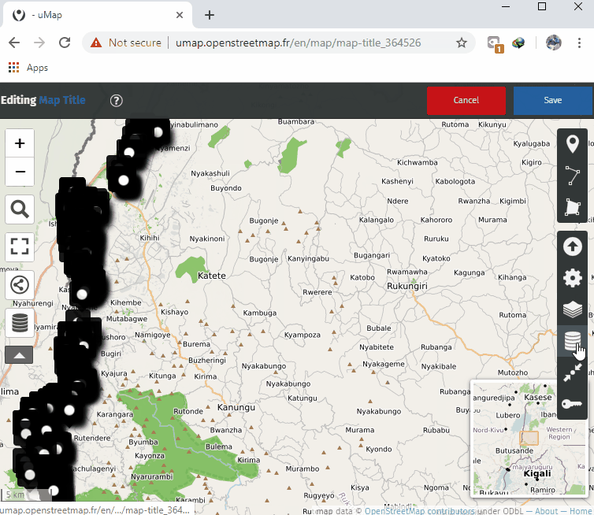
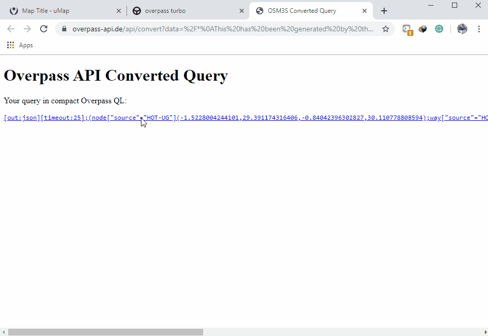
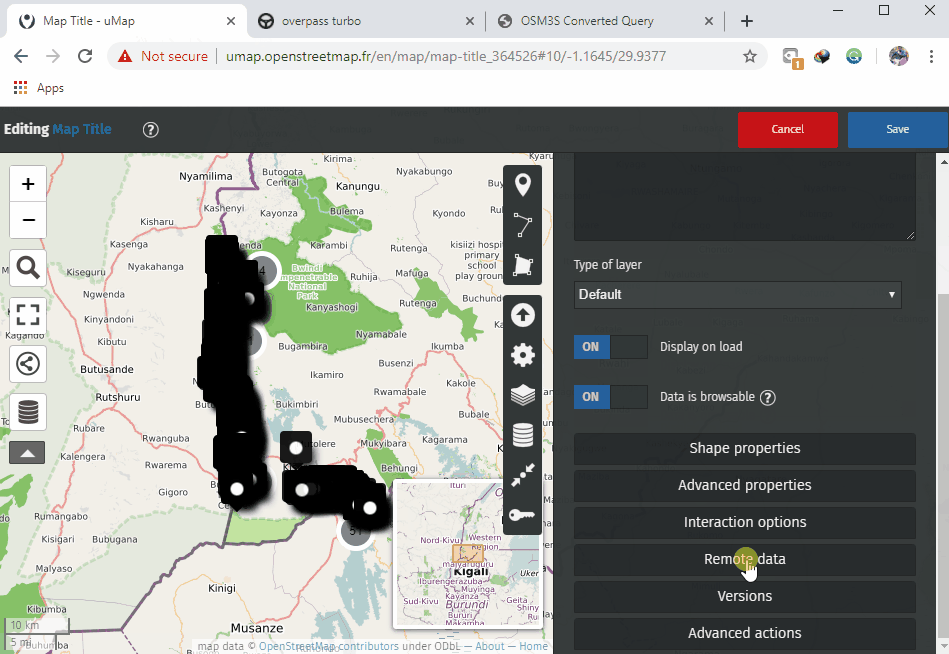

7.3 Web & Interactive Maps
This section provides:
- An overview of online interactive map tools for visualizing data
- Step-by-step instructions for creating interactive maps with two tools: uMap and Overpass Turbo
Overview
Interactive maps are viewed as the modern equivalent of visual communication with maps. This involves the creation and study of the visual representation of data (maps). To communicate information clearly and efficiently, data visualization uses statistical graphics, plots, information graphics and other tools. The use of interactive maps gives users an opportunity to change the display of the map to one’s preferences freely.
Resources and Training Materials
This section features a selection of resources targeted at project managers, trainers, or even self-learners on the topic(s) outlined above.
 The following section is designed to serve as self-paced material that can be used both during trainings, and by self-guided learners.
The following section is designed to serve as self-paced material that can be used both during trainings, and by self-guided learners.
This section covers two tools for creating interactive maps using OSM data: uMap and Overpass Turbo. uMap lets you create maps with OSM layers quickly. The platform features sample maps to inspire your use of layers, points of interest, design and licensing. Overpass Turbo Query is a web-based data filtering tool for OSM. You can run queries and analyse the resulting OSM data interactively on a map. There is an integrated Wizard that makes creating queries easy.
Overpass Turbo
Overpass Turbo Query is a web-based data mining tool for OpenStreetMap. It runs any kind of Overpass API query and shows the results on an interactive map.
Skills and Technology Needed
- Computer with
- Internet connection
- Recommended: computer mouse
Skill level required Beginner/Intermediate
How to use Overpass Turbo
- In your web browser enter https://overpass-turbo.eu/ to load Overpass Turbo
- Click Wizard on the Top Bar to create a data query

- Create a query. For example, type highway=* (This query searches for all highways in the area of interest) in the search box and click ‘Build Query’.

- In the search box on your right (Map Canvas) type the area of interest (such as Kampala, Uganda) after which, zoom in to the area.

- On the top bar, click Run to get the data. (After data points load on the map canvas)

- Click on Export in the top bar. Under the Map section download as an interactive map and share.

uMap
uMap lets you create a map with OpenStreetMap layers and embed it in your site. All within a few minutes. You can create custom maps (see the examples below). It is powered by open-source, WTFPL-licensed software.
Skills and Technology Needed
- Computer with
- Internet connection
- Recommended: computer mouse
Skill level required Beginner/Intermediate
How to use uMap
- In your web browser enter http://umap.openstreetmap.fr/en/
- On your top bar click login/signup and choose the third party (OpenStreetMap - Icon) application to use.
- Using OpenStreetMap account grant access to Umap and you will be redirected back to the uMap interface.
- On your top right corner, click create map tab

- On the top bar, Click Editing, Untitled Map to provide title map, map description and configure interactive and symbology settings of the map.


- Click SAVE after every action to prevent losing changes made.
- Click Import Data Icon on the editing tools (right bar) to add data to the map. Navigate to where your data is stored and import it.

- Click Manage Data Icon on the editing tools (right bar), then click the edit (pencil) button to edit the visual properties of the data such as color and icon style.

- Click Save on the top bar to have changes made saved.
- Refresh the page and on the left panel, click the sharing icon to copy the link that can be shared for the interactive map generated or embed the map in a custom website.

Linking uMap and Overpass Turbo
Linking uMap and Overpass Turbo makes your interactive uMap update as OpenStreetMap data is being updated.
Skills and Technology Needed
- Computer with
- Internet connection
- Recommended: computer mouse
How to link uMap and Overpass Turbo
- After creating a query in overpass-turbo.eu, click Export, Query, and then compact.

- Copy the query link as text and paste into a text editor (e.g. notepad). If you use the “copy link” feature of your browser you may first have to decode the URL by pasting in here and clicking Decode before copying to output to a text editor.

- Next, we need to take this text and generalise it to work on any map area:
- Add
http://overpass-api.de/api/interpreter?data=before the copied text. - Replace the hard-coded latitude and longitude coordinates with
({south},{west},{north},{east}). This will need to be done three times; after node[x], way[x], and relation[x]. - The final result should look like:
http://overpass-api.de/api/interpreter?data=[out:json][timeout:25];(node[“source”=”HOT-UG”]({south},{west},{north},{east});way[“source”=”HOT-UG”]({south},{west},{north},{east});relation[“source”=”HOT-UG”]({south},{west},{north},{east}););out body;>;out skel qt; - Now navigate to umap.openstreetmap.fr.
- Click Create a map and pan/zoom in to the area of interest.
- Click the layers button and then click Edit (the pencil symbol).
- In the right-hand pane click Remote data and paste the URL we constructed in step 6 into the Url box.

- Select “osm” from the drop-down Format list.
- Tick the dynamic checkbox.
- Optional: If you have a lot of data you may want to limit the display to certain zoom levels (so as to not put too much strain on the Overpass servers). You can do this by entering a min zoom level in the From Zoom box. Here I have entered 13 as my minimal zoom level.
- Customise using the options on the right. Here I’ve changed the map background to OSM monochrome and changed the colour of the overlay data.
- Click More on the left-hand side, followed by Embed and share this map.
- Copy and paste the embeddable iframe (You may need to click Current view instead of default map view in the iframe options box.